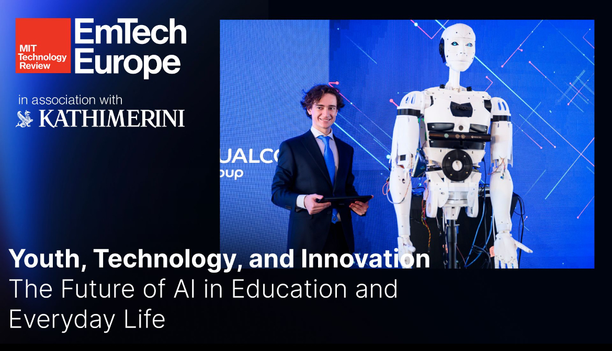

Featured · 2020–2025
Niki the Humanoid Robot
Niki is a fully 3D-printed humanoid robot I built over five years. She combines computer vision, speech recognition, natural language processing, and IoT to perform a range of tasks - recognizing faces with a custom-trained neural net, holding conversations through a ChatGPT-backed personality layer with RAG, and controlling motors through Arduino and ESP32 firmware. National TV nicknamed her the first AI humanoid robot in Greece, and I presented the project at MIT Technology Review's 2025 EmTech Conference.